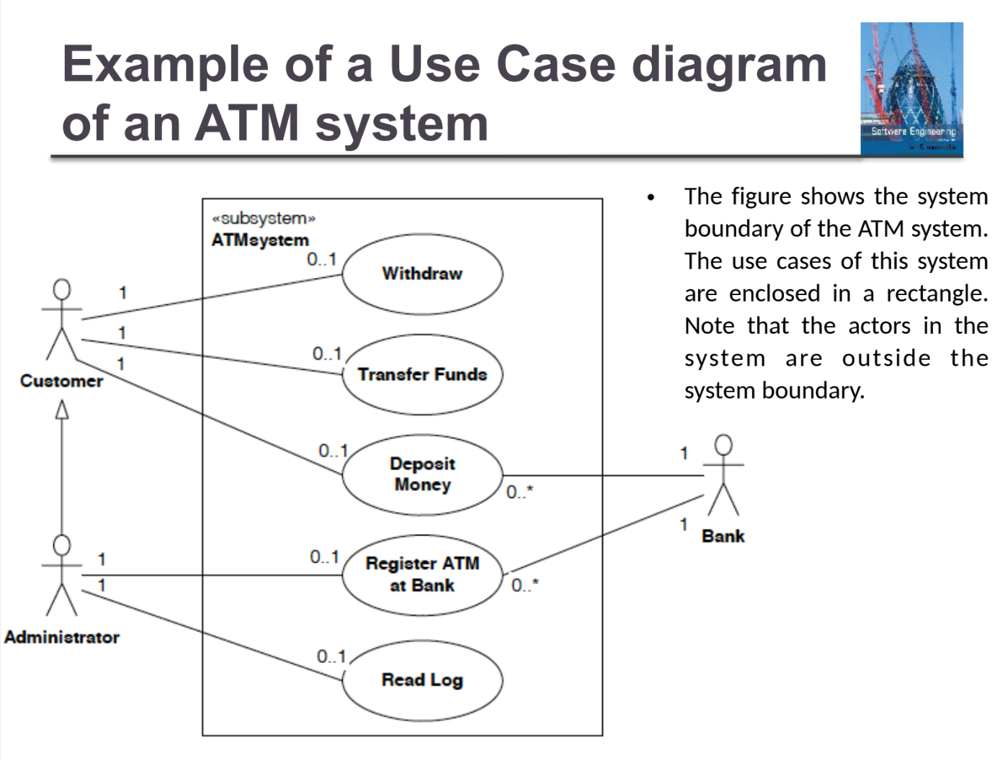
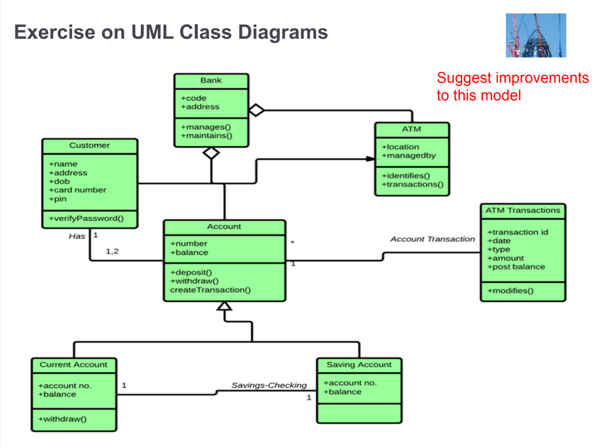
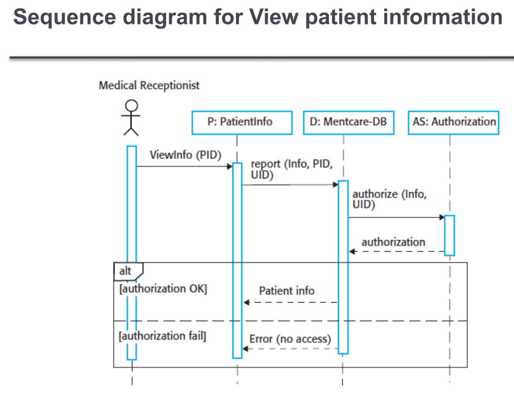
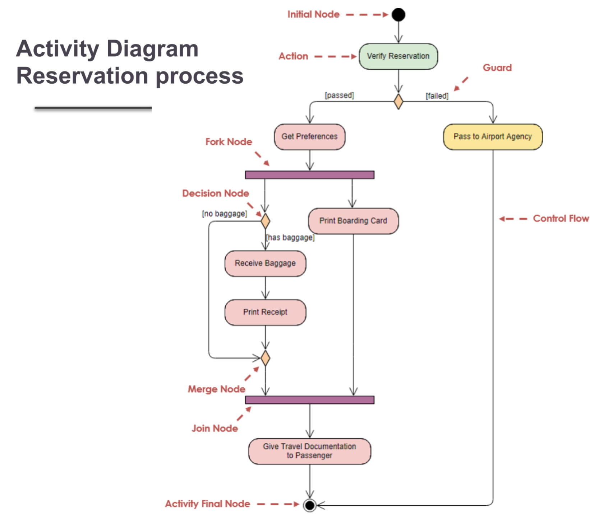
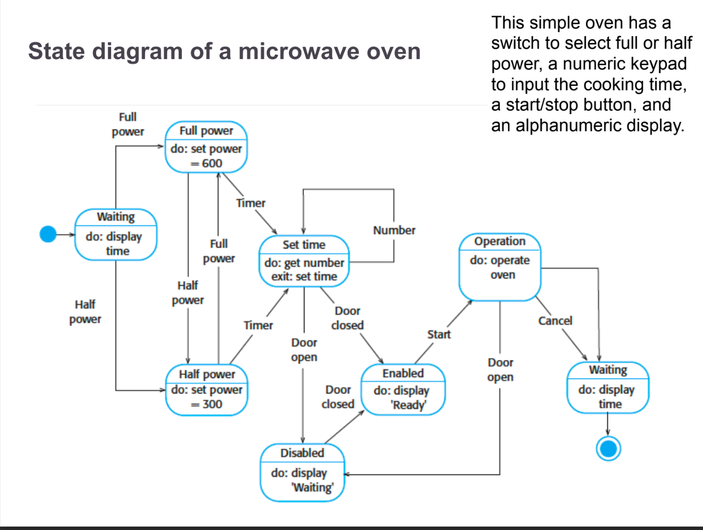

استخدمه عندما تريد توضيح من (الفاعلين) يستطيع فعل ماذا (الحالات الاستعمالية) في النظام. مثالي لالتقاط المتطلبات الوظيفية وحدود النظام.

مثال لمخطط حالات استعمالية (نظام الصراف الآلي) من شرائح المحاضرة.
استخدمه لعرض هيكل النظام - الفئات، خصائصها، دوالها، وعلاقاتها. أساسي للتصميم كائني التوجه.

مثال لمخطط فئات UML (بنك / صراف آلي / حساب) من شرائح المحاضرة.
+ عام (public)
- خاص (private)
# محمي (protected)
~ حزمة (package)
استخدمه لعرض كيفية تفاعل الكائنات خلال الزمن. مثالي لنمذجة تدفق الرسائل في سيناريو محدد.

مثال لمخطط التسلسل (عرض معلومات المريض) من شرائح المحاضرة.
استخدمه لعرض سير العمل أو تدفق العملية. مثل مخطط انسيابي متقدم مع أنشطة متوازية وحارات سباحة.

مثال لمخطط النشاط (عملية الحجز) من شرائح المحاضرة.
استخدمه لعرض كيف يتغير حالة الكائن استجابةً

مثال لمخطط الحالة من شرائح المحاضرة.